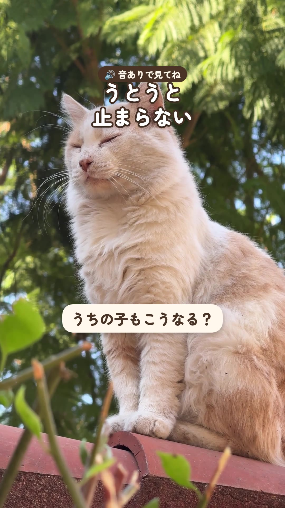

猫雑学うとうとが止まらない猫がこちら 2026-10-26・Instagramで公開目が閉じて、はっと開いて、また閉じて。猫が目を細めるのは、リラックスしているサインと言われています。月曜の夜は、このくらいの速さでいきましょう。🔊 猫の声: Felixwuuuu（CC BY-SA 4.0／Wikimedia Commons）※この動画は CC BY-SA 4.0 で公開しています素材: Engin_Akyurt（Pixabay）